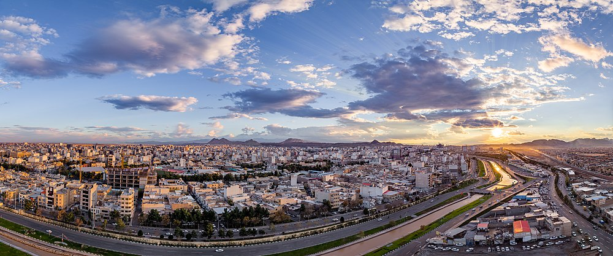

Qom [also spelled as "Ghom", "Ghum", or "Qum"] (Persian: قم [ɢom] (About this soundlisten)) is the seventh largest metropolis[3] and also the seventh largest city in Iran.[4] Qom is the capital of Qom Province. It is located 140 km (87 mi) to the south of Tehran.[5] At the 2016 census, its population was 1,201,158. It is situated on the banks of the Qom River. Qom is considered holy in Shi'a Islam, as it is the site of the shrine of Fatimah bint Musa, sister of Imam Ali ibn Musa Rida[6] (Persian: Imam Reza; 789–816). The city is the largest center for Shi'a scholarship in the world, and is a significant destination of pilgrimage, with around twenty million pilgrims visiting the city every year, the majority being Iranians but also other Shi'a Muslims from all around the world.[7] Qom is also famous for a Persian brittle toffee known as sohan (Persian: سوهان), considered a souvenir of the city and sold by 2,000 to 2,500 "sohan" shops. Qom has developed into a lively industrial centre owing in part to its proximity to Tehran. It is a regional centre for the distribution of petroleum and petroleum products, and a natural gas pipeline from Bandar Anzali and Tehran and a crude oil pipeline from Tehran run through Qom to the Abadan refinery on the Persian Gulf. Qom gained additional prosperity when oil was discovered at Sarajeh near the city in 1956 and a large refinery was built between Qom and Tehran.
